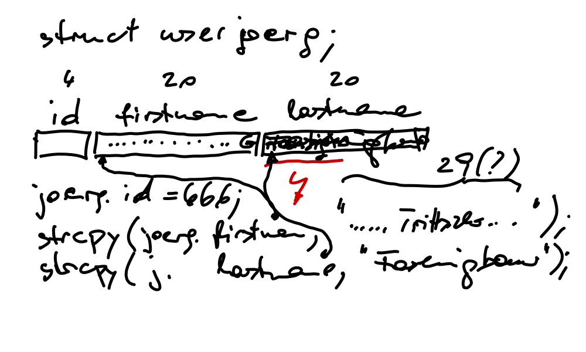

C/C++ Programming (2021-12-06 - 2021-12-10, 2022-01-24 - 2022-02-04)¶
2021-12-06¶
Pointers, Arrays, and Commandline

Exercise: Fahrenheit Table Using for
Solutions:
2021-12-07¶

2021-12-08¶
Reiterating on Exercise: Character Histogram
while ((c = getchar()) != EOF) { ... }: assignment has a value (DRY: don’t repeat yourself)Arrays (and everything else) in C are not range checked ⟶ input needs verification
How far can I write past the end of an array? ⟶ out-of-bounds-write.cpp
From the histogram example: what happens if we receive an
iso-8859-1Umlaut character, say “ö”. That character is sure not within range[0,128).
From the smaller-scale canary example.

Aside: C has no
booldatatype (C++ has) ⟶ infinite-loop.cpp
-
Solution: power.c
-
Char array (i.e., string) walkthrough: strings-wtf.cpp
Massacre using
strcpy… -
Global variables: global-vs-local.cpp
-
Demo code: type-system.cpp
Massacre resulting from mixing signed and unsigned integers …

-
Exercise: Function That Swaps Two Variables
Fix that to actually swap the caller’s variables: swap-nok.cpp
{kind=link}
2021-12-09¶
Morning wakeup, talking about what happened, questions
Reiterate on canary and memory errors in general. Security holes, blah, blah. C is the root of all evil.
argv; that double pointer thing.Compose an array like
argvmanually (argv-manually.cpp)
Double pointers, generally

Pointer arithmetic, killing canaries sitting in a row next to an integer

The same can happen to a function’s return address
Useful use of pointers: singly linked list

Continuing with Pointers and Arrays
-
Hack a little
argvexample
Pointer Recap: pointer-recap.cpp
{kind=link}
{kind=link}
{kind=link}
2022-01-24¶
Undefined Behavior¶
Undefined behavior ist commonplace in C. C++ takes long turns to get undefined behavior out of the way. For example:
Array bounds read/write
It is perfectly ok to read and write past the boundaries of an array. At least this is ok for the compiler; occasionally the program will exhibit undefined behavior - for example when you write into variables in the neighborhood. See undefined-behavior.c.
C++ brings data structures like
std::vectorthat can do this better. See undefined-behavior-c++.cpp.
Integer overflow bugs are the norm - happily mix signedness and unsignedness, happily mix various integer widths. See overflow-recap.cpp.
Structures (
struct) recap; struct-recap.cpp, again with an array bounds write.Pointers recap; pointer-recap-recap.cpp.
Functions recap; power-recap.c.
Modularization¶
What’s that separate compilation unit thing? How do we use the C preprocessor? Dogmatically introducing include guards!
See an example (in C, largely) here.
2022-01-25¶
C++ and OO (Classes)¶
Modularization (again)¶
-
Livehacking this:
2022-01-26¶
Modularization: Repeating Important Topics (Quickly)¶
Classes (continued)¶
-
Livehacking:
2022-01-27¶
Good-morning-exercise: Exercise: Access Methods for Members
(See Introduction: Classes and Objects for
privateand access methods)Solution see here
-
Livehacking
constin ol’ C: const-c.cppconstin C++: const-cpp.cpp
Exercise
-
Livehacking: excursion, back to parameter passing
swap(), revisited using references instead of pointers: parameter-passing.cppUsing
constwithstructtypes: parameter-passing-struct.cpp
Temporaries, by example. See live-hacking/mystring/temporary.cpp.
{kind=link}
2022-01-28¶
Standard Template Library: Container Templates¶
-
Livehacking: pointer arithmetic, using a C array of
struct User: user-pointerarith.cpp
2022-01-31¶
2022-02-01¶
Algorithms¶
std::copy; copy.cppstd::find; find.cppstd::find_if; find_if.cppstd::sort; sort.cppstd::binary_search; binary_search.cpp
Functors¶
Using
std::for_each; for_each-functor.cppUsing
std::find_if; find_if-functor.cpp
Operator Overloading¶
Live-hacking: operator-overloading.cpp
Exercise (Using All From Today)¶
Pending¶
TODO¶
References: bring
swap()example from livehackingWrite down
constexerciseUser: how to transform pointers into references.